ELIGE A TU LEYENDA
Dos piratas. Un océano de misterios. Explora las Frutas del Diablo y viaja por las islas de One Piece.
ZARPA HACIA LA AVENTURA.
Explora el puerto y embarca rumbo a las Frutas del Diablo, las Islas o Hachinosu.

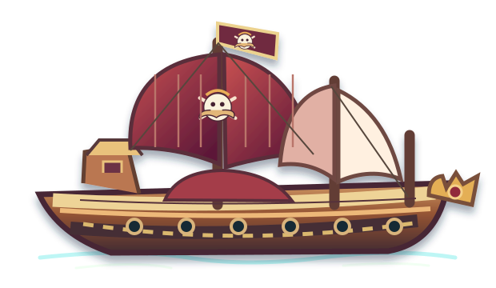
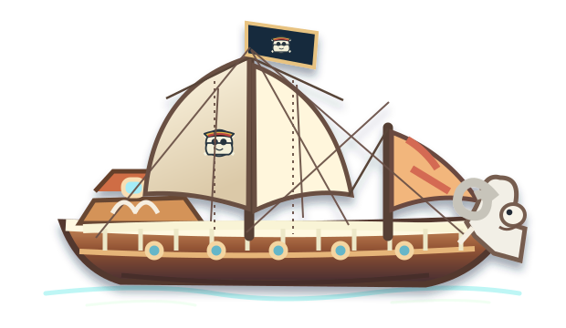
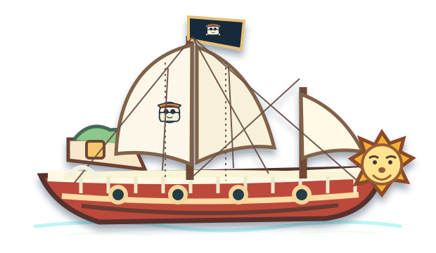
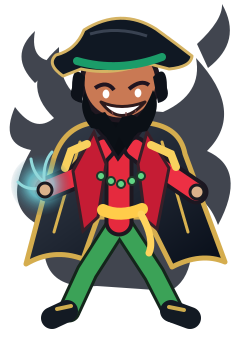
☠ BARBANEGRA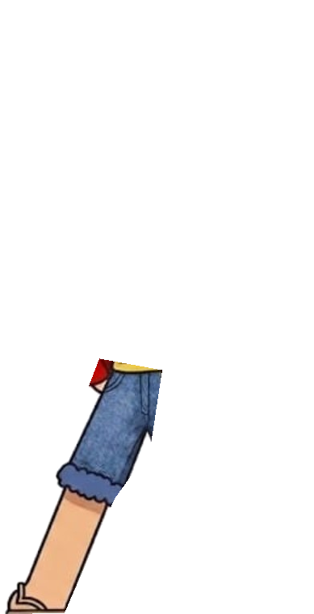
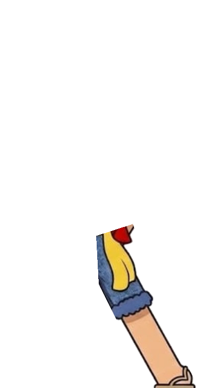
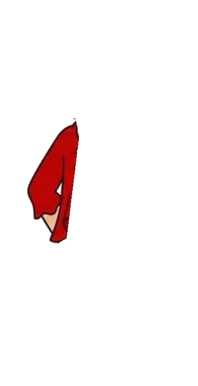
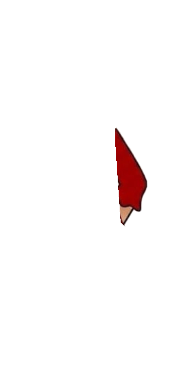
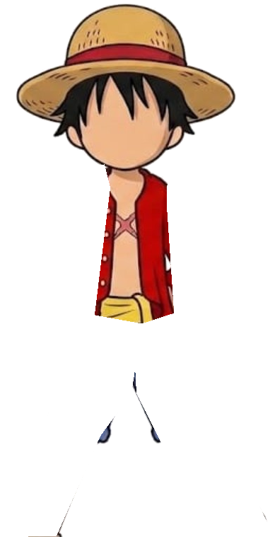
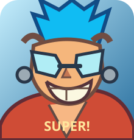
⚒️ ¡FRANKY, VEN A AYUDARNOS!
¡SUUUPER! ¡A REPARAR ESE BARCO!Franky te acompaña mientras ordenas las piezas.RECONSTRUYE EL BARCO
El impacto rompió el barco. Reconstrúyelo con nueve piezas para navegar.
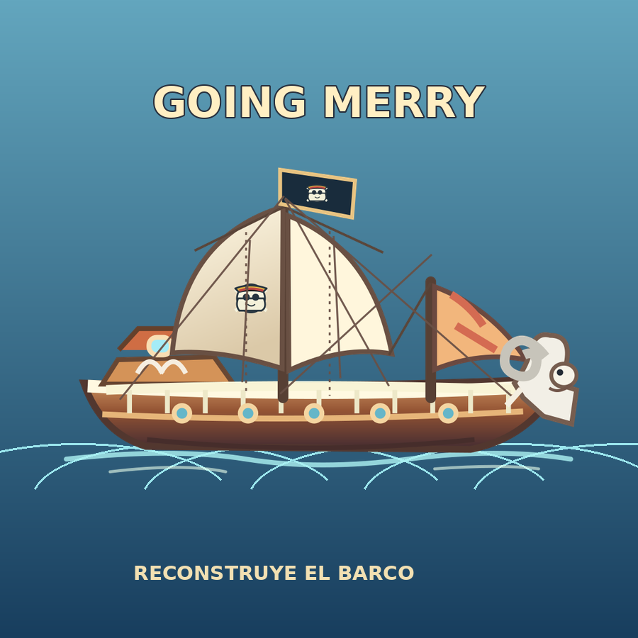
Selecciona una pieza y después otra para intercambiar sus posiciones.
0 MOVIMIENTOSEl barco no puede zarpar hasta terminar las reparaciones.
¡VICTORIA!
ELIGE TU ISLA.
Primero elige el destino. Los personajes y sus fichas aparecerán cuando entres a cada territorio.
Los nombres y escenarios de las islas organizan el juego; las fichas de personajes se obtienen de la API.
Wano
NO SE PUDO CONECTAR CON LA API
Comprueba tu conexión o intenta de nuevo.
No mostramos frutas de demostración ni ilustraciones genéricas como si fueran imágenes documentadas.